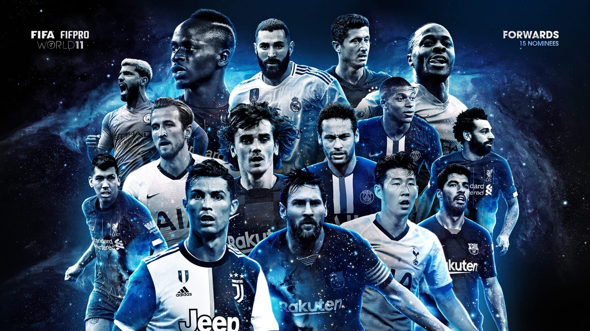
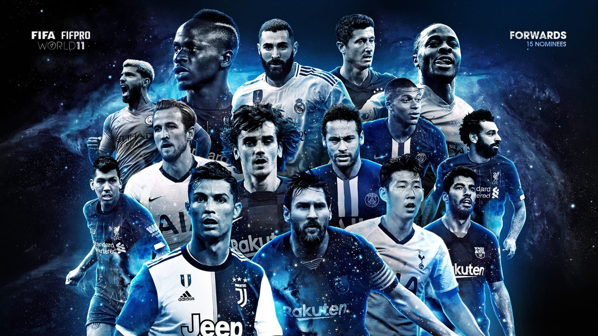

ABOUT US
Title: The Beautiful Game: Football's Global Impact Introduction Football, known as soccer in some parts of the world, is arguably the most popular and widely followed sport on the planet. With its roots dating back centuries, this game has evolved into a global phenomenon that transcends borders, languages, and cultures. This essay explores the rich history, global significance, and the impact of football on society, from its humble beginnings to its current status as a unifying force for millions around the world. Historical Origins The origins of football can be traced back to ancient civilizations. Various forms of ball games were played in different parts of the world, with some resembling the modern version of football. Ancient cultures like the Chinese, Greeks, and Romans had their own variations of the game. However, it was in England during the 19th century that modern football began to take shape. The establishment of rules and the formation of football clubs laid the foundation for the organized sport we know today. Global Reach and Popularity Football's appeal quickly spread beyond England, and by the late 19th century, it had reached other European countries, South America, and beyond. The sport's simplicity—just a ball, two goals, and the objective of scoring—made it accessible to people of all ages and backgrounds. As the 20th century unfolded, football became a global phenomenon, with the FIFA World Cup, inaugurated in 1930, serving as the pinnacle of international competition. Today, football is played and followed by billions of people across the world. Major leagues in countries like England, Spain, Italy, and Germany attract top talent from around the globe, making it a truly global sport. The UEFA Champions League and Copa Libertadores have become some of the most prestigious club competitions, while the FIFA World Cup and UEFA European Championship captivate the world every four years. Impact on Society.